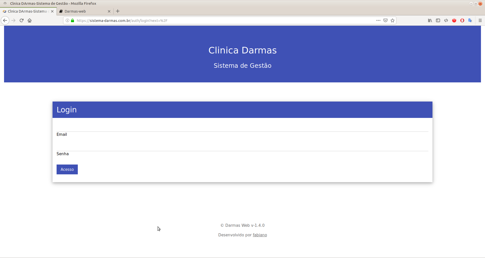

Sistema de gestão da Clinica Darmas
Sistema hospedado no seguinte domínio sistema-darmas.com.br.
Login no sistema
Para ter acesso ao sistema é necessário a solicitação de usuário e senha para o administrador do mesmo, feito isso, basta acessar a url do sistema que a seguinte tela de login será exibida:

Perfis e permissões
Cada usuário do sistema possui um perfil de acordo com a atividade exercida na clinica, cabe ao admisnitrador definir qual o perfil mais adequado para cada integrante da equipe. Os seguintes perfis estão disponiveis:
- Administrador: Manutenção do sistema.
- Profissional: Nas suas atividades de Psicólogo, Psiquiatra, Nutricionista, Fonoaudiólogo e Neurologista;
- Recepcionista: Responsável por dar manutenção na agenda de pacientes.